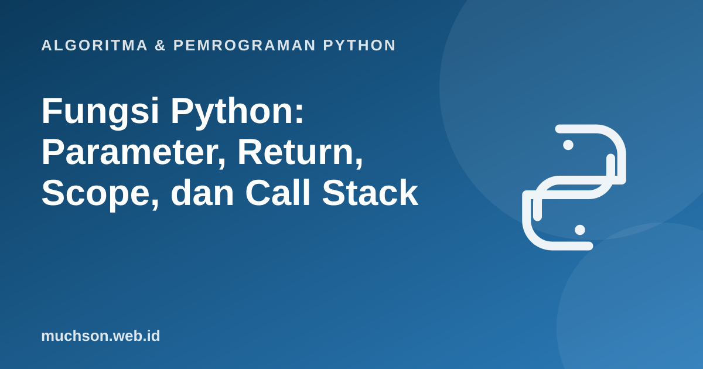

Beranda › Artikel › Algoritma & Pemrograman Python
Algoritma & Pemrograman PythonFungsi Python: Parameter, Return, Scope, dan Call Stack
Fungsi memecah program besar menjadi bagian kecil yang bisa dipakai ulang, diuji, dan dipahami sendiri-sendiri. Itu keterampilan yang membedakan skrip sekali pakai dari perangkat lunak. Materi ini membahas bukan hanya cara menulis fungsi, tetapi juga apa yang terjadi di memori saat fungsi dipanggil.
Sebaiknya sudah paham: percabangan dan perulangan

Setelah membaca dan mencoba materi ini, Anda mampu:
- mendefinisikan dan memanggil fungsi dengan parameter dan nilai kembali
- membedakan parameter dan argumen, serta return dan print
- memakai nilai default dan menghindari jebakan default mutable
- menjelaskan scope LEGB dan variabel lokal vs global
- membaca call stack saat fungsi memanggil fungsi lain
Anatomi fungsi
def luas(panjang, lebar):
"""Menghitung luas persegi panjang.""" # docstring
return panjang * lebar
def sapa(nama, sapaan="Halo"): # nilai default
print(f"{sapaan}, {nama}!")
hasil = luas(5, 3)
print(hasil)
sapa("Dewi")
sapa("Budi", sapaan="Selamat pagi") # argumen kata kunci
print(luas.__doc__)15
Halo, Dewi!
Selamat pagi, Budi!
Menghitung luas persegi panjang.
return bukan print
return mengirim nilai kembali ke pemanggil dan mengakhiri fungsi. print hanya menampilkan sesuatu di layar. Fungsi tanpa return mengembalikan None.
def kuadrat_print(x):
print(x * x)
def kuadrat_return(x):
return x * x
a = kuadrat_print(4) # mencetak 16, tetapi a bernilai None
b = kuadrat_return(4) # b bernilai 16
print(a, b)
print(kuadrat_return(kuadrat_return(2))) # bisa dipakai lagi karena mengembalikan nilai16
None 16
16
Call stack: apa yang terjadi saat fungsi dipanggil
Setiap pemanggilan membuat frame baru berisi variabel lokalnya. Frame ditumpuk, dan hilang saat fungsi selesai. Pada penelusuran ini, perhatikan frame kuadrat() muncul di panel memori setiap kali fungsi dipanggil.
Scope: di mana sebuah nama dapat dilihat
Python mencari nama dengan urutan LEGB: Local (di dalam fungsi), Enclosing (fungsi pembungkus), Global (tingkat modul), Built-in (bawaan seperti len).
x = "global"
def a():
x = "lokal di a" # variabel baru, bukan mengubah yang global
return x
def b():
return x # tidak ada x lokal: pakai yang global
print(a(), b(), x)
def c():
global x
x = "diubah oleh c" # sengaja mengubah yang global (hindari bila bisa)
c()
print(x)
def d():
print(x2) # error: x2 dianggap lokal karena ditugaskan di bawah
x2 = 1
try:
d()
except UnboundLocalError as e:
print("UnboundLocalError:", e)lokal di a global global
diubah oleh c
UnboundLocalError: cannot access local variable 'x2' where it is not associated with a value
Hindari mengubah variabel global dari dalam fungsi. Kirim data lewat parameter dan kembalikan hasil lewat return. Fungsi yang bergantung hanya pada masukannya jauh lebih mudah diuji dan di-debug.
Jebakan: nilai default yang mutable
def tambah_salah(x, daftar=[]): # list dibuat SATU kali saat def dijalankan
daftar.append(x)
return daftar
print(tambah_salah(1))
print(tambah_salah(2)) # ikut membawa 1: default dipakai ulang!
def tambah_benar(x, daftar=None):
if daftar is None:
daftar = []
daftar.append(x)
return daftar
print(tambah_benar(1), tambah_benar(2))[1]
[1, 2]
[1] [2]
Fungsi dengan banyak nilai kembali dan type hints
def statistik(data: list[float]) -> tuple[float, float, float]:
"""Mengembalikan (minimum, maksimum, rata-rata)."""
return min(data), max(data), sum(data) / len(data)
kecil, besar, rata = statistik([4, 8, 15, 16, 23, 42])
print(kecil, besar, round(rata, 2))4 42 18.0
1. Tulis fungsi apakah_genap(n) yang mengembalikan True/False. Mengapa lebih baik return n % 2 == 0 daripada if-else yang mengembalikan True/False?
def apakah_genap(n): return n % 2 == 0. Ekspresinya sudah bernilai bool, jadi if-else hanya mengulang hal yang sama dengan lebih panjang.2. Tulis fungsi hitung_vokal(teks) dan panggil dengan tiga contoh, termasuk string kosong.
def hitung_vokal(teks): return sum(1 for c in teks.lower() if c in "aiueo"). hitung_vokal("") menghasilkan 0.3. Apa keluaran: def f(): x = 5
x = 1
f()
print(x)?
4. Tulis fungsi yang menerima list dan mengembalikan list baru berisi elemen kuadratnya tanpa mengubah list asli.
def kuadratkan(data): return [x * x for x in data]- def mendefinisikan fungsi; parameter di definisi, argumen saat pemanggilan.
- return mengirim nilai kembali; print hanya menampilkan.
- Setiap pemanggilan membuat frame di call stack dengan variabel lokalnya sendiri.
- Scope LEGB: Local, Enclosing, Global, Built-in.
- Jangan memakai objek mutable sebagai nilai default; pakai None lalu buat di dalam fungsi.
Tanya jawab
Apa bedanya parameter dan argumen?
Apakah Python pass by value atau pass by reference?
Berapa panjang fungsi yang baik?
Referensi
- Dokumentasi Python: Defining Functions (tutorial)
- Dokumentasi Python: Python Scopes and Namespaces
- Dokumentasi Python: Execution model (naming and binding)
- PEP 257, Docstring Conventions
- Allen B. Downey, Think Python (edisi ke-3), buku teks terbuka